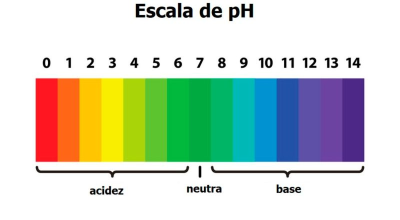
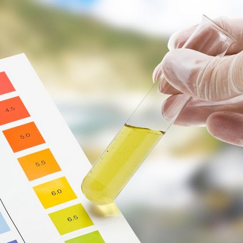
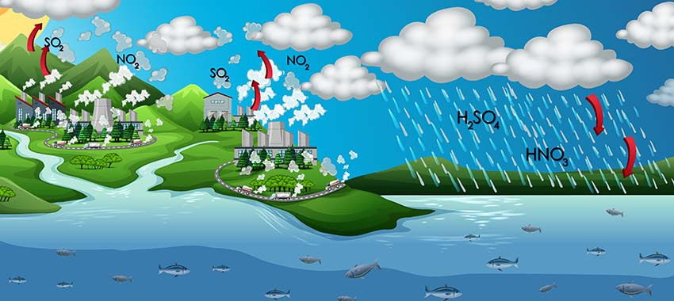
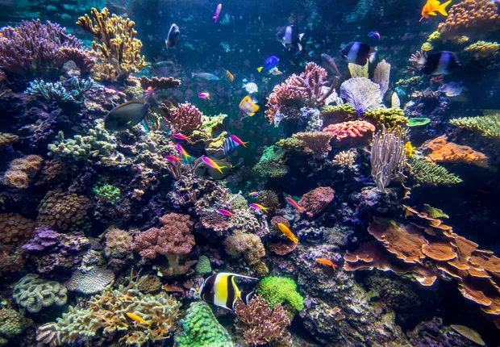
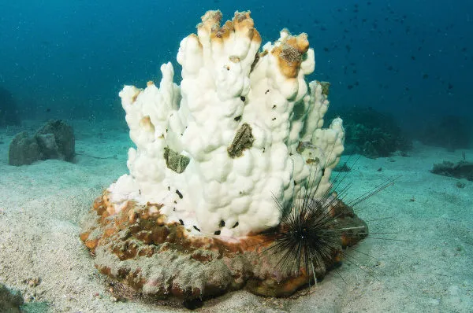

Acidificação das Águas
A acidificação oceânica é um processo químico direto causado pelo aumento da absorção de dióxido de carbono (CO₂) atmosférico pelos oceanos. Desde a Revolução Industrial, os mares absorveram cerca de 30% do CO₂ emitido por atividades humanas, resultando em uma redução de 0,1 unidades no pH médio da superfície oceânica - um aumento de 26% na acidez. Esse valor, aparentemente pequeno, representa a mudança mais rápida na química marinha dos últimos 50 milhões de anos, segundo registros geológicos.
Pesquisas do Laboratório de Meio Ambiente Marinho da NOAA revelam que organismos que constroem conchas e esqueletos de carbonato de cálcio são especialmente vulneráveis. Em condições de maior acidez, ostras, mariscos, corais e plâncton calcificante (como os pterópodes) enfrentam dificuldades para manter suas estruturas. Estudos mostram que larvas de ostras no Pacífico Nordeste têm 60% menos sucesso em formar conchas viáveis comparado a níveis pré-industriais.
A acidificação desestabiliza toda a cadeia alimentar marinha. O plâncton calcificante, base da alimentação de peixes como o salmão, está se tornando escasso em algumas regiões. No Ártico, onde a acidificação avança mais rápido, pesquisadores observaram deformidades em caranguejos jovens e redução de 40% na biodiversidade de moluscos em estações de monitoramento.

Fonte Disponível em: Normas Abnt

Fonte Disponível em: Bem Paraná
Os recifes de coral, que abrigam 25% da vida marinha, estão particularmente ameaçados. Experimentos na Grande Barreira de Coral mostram que a taxa de crescimento dos corais diminuiu 15% desde 1990. Projeções indicam que, sob o cenário atual de emissões, 90% dos recifes poderão sofrer erosão líquida até 2050, incapazes de crescer mais rápido do que se dissolvem.
A Organização das Nações Unidas para Alimentação e Agricultura (FAO) alerta que a acidificação pode reduzir em 10% a captura global de moluscos até 2100. No noroeste dos EUA, a indústria de ostras já gasta milhões anualmente para ajustar a química da água em criadouros. Comunidades costeiras tropicais que dependem de recifes para pesca enfrentam riscos crescentes à segurança alimentar.
Rede de sensores como o GOA-ON (Global Ocean Acidification Observing Network) monitora mudanças em 70 países. Dados revelam "pontos quentes" de acidificação como o Mar de Bering e o Mar do Norte, onde o pH está caindo duas vezes mais rápido que a média global. Embora algumas espécies mostrem resiliência em laboratório, cientistas concordam que a adaptação natural dificilmente acompanhará o ritmo atual de mudanças.
Chuvas Acidas
O aumento das emissões industriais tem intensificado um fenômeno preocupante: a chegada de chuvas ácidas aos oceanos. Quando o dióxido de enxofre e óxidos de nitrogênio liberados na atmosfera se combinam com o vapor d'água, formam compostos ácidos que caem sobre os mares. Esse processo está alterando a química das águas costeiras, com impactos diretos nos ecossistemas marinhos.
As regiões mais afetadas são as zonas costeiras próximas a grandes centros industriais. Na China, por exemplo, medições registraram quedas abruptas no pH da água do mar após eventos de chuva ácida. Essa acidificação temporária, quando frequente, pode ser tão danosa quanto a acidificação crônica causada pelo CO₂. Organismos marinhos que constroem estruturas de carbonato de cálcio, como corais e moluscos, são os primeiros a sofrer as consequências.
O plâncton calcificante, base da cadeia alimentar marinha, apresenta sensibilidade especial às mudanças de pH. Estudos no Mar Báltico demonstraram que chuvas ácidas reduzem em até 30% a sobrevivência de larvas de mexilhões. Quando esses organismos são afetados, toda a teia alimentar sofre impactos, desde pequenos peixes até grandes predadores marinhos.

Fonte Disponível em: Revista Digital

Fonte Disponível em: Freepik
Além dos efeitos diretos na vida marinha, as chuvas ácidas potencializam outros problemas ambientais. Em águas já poluídas, a acidez adicional libera metais pesados dos sedimentos, aumentando sua toxicidade. Simultaneamente, os nitratos presentes nessas precipitações agem como fertilizantes, podendo desencadear florações algálicas desequilibradas que consomem o oxigênio da água.
As consequências econômicas são igualmente preocupantes. Em regiões como o Golfo do México, onde a pesca e o turismo são atividades essenciais, a combinação de acidificação e poluição ameaça setores inteiros da economia. A aquicultura, especialmente a criação de ostras e mexilhões, já registra perdas significativas em áreas com maior incidência de chuvas ácidas.
Apesar dos avanços no controle de emissões em alguns países, o problema persiste em escala global. Dados recentes indicam que muitas regiões costeiras continuam vulneráveis, com previsões de aumento na frequência e intensidade desses eventos. O monitoramento contínuo é essencial para entender os efeitos em longo prazo desse fenômeno que, embora menos visível que outros tipos de poluição, representa um risco crescente para a saúde dos oceanos.
A Dissolução Silenciosa: Como a Acidificação Consome a Vida Marinha
Nos recifes de coral e nos bancos de moluscos ao redor do mundo, um processo químico invisível está reescrevendo o futuro da vida marinha. Conforme os oceanos absorvem quantidades crescentes de CO₂, uma transformação fundamental ocorre nas águas: o carbonato de cálcio, matéria-prima essencial para conchas e esqueletos, começa a se dissolver antes mesmo de ser utilizado pelos organismos.
Os primeiros sinais aparecem nos criadouros naturais. Larvas de ostras no Pacífico Nordeste já demonstram dificuldades para iniciar a formação de suas conchas, com estruturas frágeis e deformadas, recifes de coral, pois a acidificação repentina das águas costeiras estressa os pólipos, forçando-os a expulsar suas algas simbióticas vitais e deixando os esqueletos calcários fantasmagoricamente brancos. Nos mares polares, onde a acidificação avança mais rápido, os pterópodes - pequenos moluscos planctônicos conhecidos como "borboletas-do-mar" - apresentam conchas transparentes e corroídas quando examinadas sob microscópio. Esses organismos, fundamentais na dieta de salmões e baleias, estão se tornando escassos em várias regiões.
Os recifes de coral enfrentam seu próprio drama químico. Nas águas tropicais, onde normalmente cresciam cerca de 2 cm por ano, muitas colônias agora lutam para manter sua estrutura básica. O esqueleto de carbonato de cálcio que sustenta esses ecossistemas biodiversos dissolve-se gradualmente, deixando os corais vulneráveis a erosões e tempestades. Na Grande Barreira de Coral, observações mostram que partes do recife já perdem mais material do que conseguem repor durante certos períodos do ano.

Fonte Disponível em: Epoca Neogicios

Fonte Disponível em: Braisil Escola
O fenômeno não poupa os fundos marinhos. Nos bancos naturais de vieiras e mexilhões, a água ácida penetra nos sedimentos, dissolvendo conchas abandonadas que serviam como refúgio para jovens crustáceos e peixes. Essa perda de microhabitats desestabiliza toda a cadeia alimentar, desde estrelas-do-mar até aves marinhas que dependem desses ecossistemas para sobreviver.
As consequências econômicas ecoam desde as comunidades pesqueiras até os mercados globais. No noroeste dos Estados Unidos, criadores de ostras já relatam perdas de até 40% na produção de sementes durante anos com maior acidificação costeira. No Sudeste Asiático, onde os recifes protegem as costas e sustentam a pesca artesanal, a dissolução progressiva das estruturas coralíneas ameaça a segurança alimentar de milhões.
Enquanto isso, em laboratórios marinhos, cientistas observam um paradoxo perturbador: mesmo organismos que conseguem sobreviver em água ácida gastam tanta energia para manter suas conchas que têm menos recursos para reprodução e crescimento. Essa compensação fisiológica sugere que, mesmo sem desaparecer completamente, muitas espécies podem se tornar escassas demais para sustentar os ecossistemas como os conhecemos hoje. A dissolução silenciosa das estruturas calcárias marinhas não é apenas uma mudança química - é uma reconfiguração lenta, mas implacável, dos alicerces da vida nos oceanos.
Videos Relacionados a Leitura
Acidificação dos Oceanos
Acidificação dos Oceanos: A Ameaça Invisível 🌊💀🚨
Branqueamentos dos corais
O que é são os branqueamentos dos corais